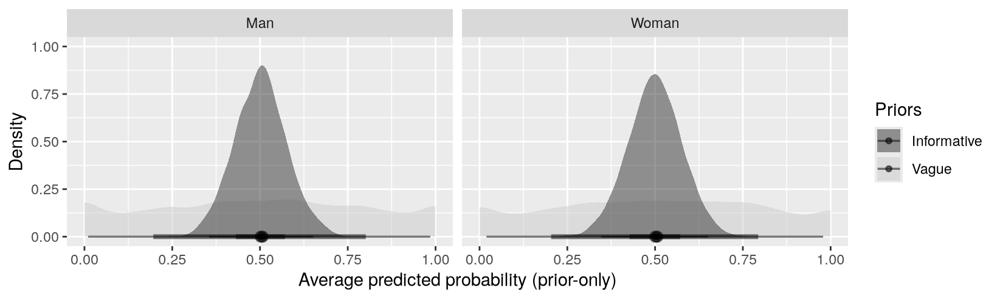
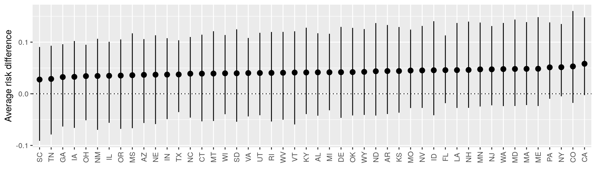
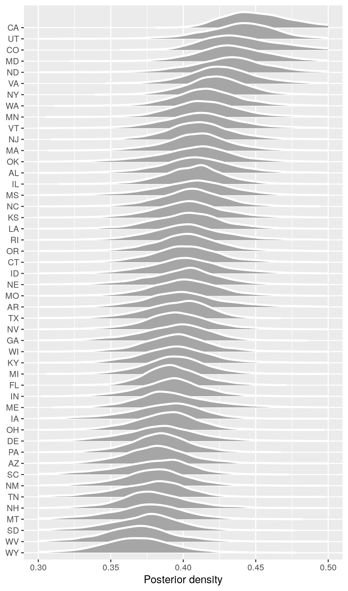

12 使用后分层进行多层次回归
从模型到意义 - 中文翻译
来源：Vincent Arel-Bundock，《Model to Meaning: How to Interpret Statistical Models in R and Python》（《从模型到意义：如何解释 R 和 Python 中的统计模型》）——第 12 章 多层回归与后分层。 来源说明：截至 2026-09-19，公开仓库的修订版 870f15a0 中不包含本章完整的 .qmd 源文件。本页面译自同日下载的公开 HTML 快照。因此，R/Python 代码和图形均以静态形式呈现；本网站未重新执行上游代码。 本网站文字（C）2025 Vincent Arel-Bundock，版权所有；marginaleffects 软件代码采用 GPL-3 许可。 本页面为中文译文，并非原文；本译文依据本 Notes 网站所使用的授权声明翻译并发布。
本章展示 marginaleffects 如何帮助我们理解复杂的层级数据，并从不具代表性的样本中进行推断。为此，我们考察一种称为多层回归与后分层（multilevel regression with poststratification，MRP）的实证策略。1
本 MRP 案例研究有三个主要目标。首先，展示如何使用 marginaleffects 解释通过拟合多层回归模型（也称为层级模型、混合效应模型或随机效应模型）得到的估计值。其次，说明可以使用一致的估计后工作流来解释频率学派模型和贝叶斯模型的结果。最后，本案例研究说明如何使用后分层来校正不具代表性的抽样。
我们将 MRP 应用于在美国收集的调查数据。我们的实质性目标是估计美国各州对削减警察部门预算的支持程度。本分析遵循 Ornstein（2023）的研究；他整理并研究了来自 2020 年合作选举研究（CES）的数据。对于希望深入了解 MRP，包括模型选择和方法的详细讨论的读者，可参考 Ornstein 撰写的优秀教程。
在我们的分析中，感兴趣的结果变量是 defund，这是一个二元变量：如果受访者支持削减警察预算，则取值为 1。2 预测变量包括个体层面的协变量 gender、race、age 和 education。该数据集还记录了每位调查受访者是否曾是 military 成员，以及他们居住的 state。
ces_survey 数据集包含 3000 个观测值，这些观测值从完整的 CES 数据中随机抽取。
library(marginaleffects)
survey = get_dataset("ces_survey")
head(survey)
state defund gender age education military
1 TX 0 Woman 70+ Some college 1
2 NJ 1 Woman 18-29 4 year 0
3 CO 0 Woman 60-69 4 year 1
4 PA 0 Man 50-59 4 year 1
5 PA 0 Woman 70+ High school 1
6 IA 1 Man 40-49 Some college 012.1 多层模型
多层模型（或混合效应模型）是研究具有层级、嵌套或多层结构数据的一种常用策略。嵌套数据的例子包括来自不同州的调查受访者；对同一受试者或同一簇观测值进行的重复测量；以及嵌套于课堂、学校、学区和州中的学生。多层建模的全面介绍超出了本章范围，但感兴趣的读者可以参考许多优秀的相关著作（Gelman and Hill 2006；Finch et al. 2019；Hodges 2021；Bürkner 2024）。
多层模型的参数可以分为两类：“固定效应”和“随机效应”。固定效应是指假定在总体所有组之间保持不变的参数。相反，随机效应是允许在组之间变化的参数。混合效应模型的一个重要优点是，它允许参数在数据的不同子集之间存在变化。例如，通过指定“随机截距”，分析者可以让 defund 的基线支持水平在美国各州之间变化。通过为 gender 变量加入“随机系数”，分析者可以允许 gender 与 defund 之间关联的强度随州而变化。
需要特别指出的是，混合效应模型中的随机参数并不是完全自由地在组之间变化。相反，模型通常会对参数分布的形状施加约束。实际上，这会对参数进行正则化，使小样本量组的估计能够借鉴大样本量组的估计，并将极端观测值拉近分布中心。这可以降低过拟合风险并稳定估计值。
12.2 频率学派方法
R 中有多个软件包允许我们从频率学派视角拟合混合效应模型，例如 lme4（Bates et al. 2015）和 glmmTMB（Brooks et al. 2017）。使用这些软件包时，我们采用熟悉的公式语法定义模型。拟合线性模型或广义线性模型时，模型的固定部分按照与其他预测变量相同的方式指定。随机效应部分则使用带圆括号和竖线的特殊语法指定。
y = x + z + (1 + z | group)
上述公式表示：y 是结果变量；预测变量 x 和 z 与结果 y 之间的关联由固定效应参数刻画；1 是随机截距，它允许 y 的基线水平在组之间变化；z 是随机系数，它允许 z 与 y 之间关联的强度在组之间变化；group 是分组变量。
为了对支持削减警察预算的概率建模，我们使用 glmmTMB 软件包，拟合一个逻辑回归模型，其中包括按州设置的随机截距和随机 gender 系数。
library(glmmTMB)
library(marginaleffects)
mod = glmmTMB(
defund ~ age + education + military + gender + (1 + gender | state),
family = binomial,
data = survey)
summary(mod)
Family: binomial ( logit )
Formula: defund ~ age + education + military + gender + (1 + gender |
state)
Data: survey
AIC BIC logLik -2*log(L) df.resid
3822.7 3918.8 -1895.3 3790.7 2984
Random effects:
Conditional model:
Groups Name Variance Std.Dev. Corr
state (Intercept) 0.004169 0.06457
genderWoman 0.001333 0.03650 1.00
Number of obs: 3000, groups: state, 48
Conditional model:
Estimate Std. Error z value Pr(>|z|)
(Intercept) -0.2577928 0.2324920 -1.109 0.26751
age30-39 0.0192253 0.1256230 0.153 0.87837
age40-49 -0.7821669 0.1342192 -5.828 5.63e-09 ***
age50-59 -0.9662776 0.1278805 -7.556 4.15e-14 ***
age60-69 -1.1645794 0.1325723 -8.784 < 2e-16 ***
age70+ -1.3740248 0.1527391 -8.996 < 2e-16 ***
educationHigh school 0.0890342 0.2286540 0.389 0.69699
educationSome college 0.4157259 0.2297095 1.810 0.07033 .
education2 year 0.1891399 0.2478493 0.763 0.44539
education4 year 0.6204406 0.2294903 2.704 0.00686 **
educationPost grad 0.9882507 0.2405607 4.108 3.99e-05 ***
military 0.0003398 0.0829750 0.004 0.99673
genderWoman 0.1680639 0.0814649 2.063 0.03911 *
---
Signif. codes: 0 '***' 0.001 '**' 0.01 '*' 0.05 '.' 0.1 ' ' 1这些估计系数的符号很有意思，但其大小却有些难以解释。与前几章一样，我们可以使用 marginaleffects 来理解这些估计值。
首先，让我们使用 predictions() 函数，计算两个假想个体支持削减警察预算的预测概率：一个来自加利福尼亚州，另一个来自阿拉巴马州。3
p = predictions(mod, newdata = datagrid(
state = c("CA", "AL"),
gender = "Man",
military = 0,
education = "4 year",
age = "50-59"
))
# p
我们的模型预测，具有这些人口学特征的调查受访者如果居住在加利福尼亚州，支持削减经费的概率为 35.3%；如果居住在阿拉巴马州，该概率则为 37.2%。
为了评估 age 与 defund 之间关联的强度，我们可以使用 avg_comparisons() 函数。
avg_comparisons(mod, variables = "age")
|—————|———-|————|——–|————-|———|———|
调查受访者的 age 与其在 defund 问题上回答“是”的倾向密切相关。平均而言，我们的模型预测，从较年轻的年龄组（18-29 岁）转到较年长的年龄组（70 岁以上），与支持削减警察人员概率降低 31 个百分点相关。
这个简短的例子表明，我们可以将前几章介绍的工作流应用于解释混合效应模型的结果。下一节将从贝叶斯视角分析一个类似的模型。
12.3 贝叶斯方法
贝叶斯回归分析在统计学中有着悠久的历史。计算、算法设计和软件开发方面的近期进展大幅降低了入门门槛；分析者如今可以更容易地估计贝叶斯混合效应模型。4
典型的贝叶斯分析包含若干（通常是迭代式的）步骤，包括模型构建、先验设定、模型改进、估计和解释。这些步骤共同构成“贝叶斯工作流”，使分析者能够从数据走向洞见（Gelman et al. 2020）。
本节说明如何使用 R 的 brms 软件包拟合贝叶斯混合效应模型，以及 marginaleffects 软件包如何促进贝叶斯工作流中的两个重要步骤：先验预测检验和后验汇总。
我们在此考察的模型与上一节的频率学派模型具有相同的基本结构。
defund ~ age + education + military + gender + (1 + gender | state)
age、education 和 military 变量与固定效应参数相关，而 gender 和截距参数则允许随州而变化。
12.3.1 先验预测检验
贝叶斯分析者与频率学派分析者之间的一个重要区别是，前者必须明确指定模型参数的先验分布。先验分布编码了分析者在查看数据之前对感兴趣参数所拥有的知识、信念或信息。有些先验分布可能会对结果产生重要影响，因此谨慎选择先验分布至关重要。
使用 R 的 brms 软件包中的 prior 函数，我们可以轻松指定不同的先验分布。例如，如果我们对模型中参数的取值存在很大不确定性，就可以设置“模糊”或“弥散”先验，比如来自方差较大的正态分布的先验。
library(brms)
library(ggdist)
library(ggplot2)
priors_vague = c(
prior(normal(0, 1e6), class = "b"),
prior(normal(0, 1e6), class = "Intercept")
)
相反，如果分析者确信参数应当更接近零，就可以选择更“有信息”或更“窄”的先验分布。
priors_informative = c(
prior(normal(0, 0.2), class = "b"),
prior(normal(0, 0.2), class = "Intercept")
)
对于许多分析者而言，选择先验分布是一项困难的工作。这种困难部分源于：我们经常需要为以不直观尺度表示的参数指定先验分布。5 混合效应 logit 模型的系数意味着什么？认为它们服从方差为 0.2 的正态分布是否合理？
为了帮助回答这些问题，我们可以进行先验预测检验，也就是说，在完全不考虑任何数据的情况下，根据纯模型和先验分布模拟感兴趣的量。通过观察这些具有比原始系数更直观解释的模拟感兴趣量，我们可以检查不同先验分布是否合理。随后，在让观测数据影响我们的看法之前，我们可以完全依据先验知识改进模型。
要在 R 中进行先验预测检验，我们首先使用 brm() 函数及其公式语法定义包含固定参数和随机参数的模型结构。然后，将 family=bernoulli 设置为指定逻辑回归模型。使用 prior 参数指定我们希望使用的先验分布，可以是弥散先验，也可以是有信息先验。最后，将 sample_prior="only" 作为参数传入，指示 brms 完全忽略实际数据，只从先验分布中抽取模拟值。
model_vague = brm(
defund ~ age + education + military + gender + (1 + gender | state),
family = bernoulli,
prior = priors_vague,
sample_prior = "only",
data = survey)
model_informative = brm(
defund ~ age + education + military + gender + (1 + gender | state),
family = bernoulli,
prior = priors_informative,
sample_prior = "only",
data = survey)
sample_prior 参数功能强大。它允许我们在不查看数据的情况下，从模型和先验分布中抽取模拟系数。但仍然存在一个问题：该函数的输出仍然以与模型参数相同的不直观尺度表示。
fixef(model_vague)
Estimate Est.Error Q2.5 Q97.5
Intercept 4850.029 1396200.9 -2781669 2717467
age30M39 -18329.315 998994.3 -1967202 1919887
age40M49 3197.798 989851.4 -1922773 1967932
age50M59 5361.777 988274.2 -1977543 1928286
age60M69 3855.307 994858.6 -1975355 1979740
age70P 4205.195 990802.4 -1954093 2012375
educationHighschool -2754.653 995631.5 -1887393 1958796
educationSomecollege -6641.966 995750.7 -1922348 1931252
education2year -2800.245 1023131.5 -2019190 2000785
education4year 4547.094 983855.5 -1952877 1941403
educationPostgrad 11763.614 965213.5 -1899724 1929019
military -9810.099 997028.5 -1925852 1913335
genderWoman 12628.700 992469.2 -1936186 1974271我们如何知道上面打印的结果是否合理？一种简单的方法是使用 marginaleffects 对仅含先验的 brms 模型进行后处理。通过这种策略，我们可以计算本书前面介绍的任何感兴趣量：预测值、反事实对比和斜率。6
使用模糊正态先验时，支持削减警察预算的平均预测概率以 0.5 为中心，其可信区间几乎覆盖整个单位区间。
p_vague = avg_predictions(model_vague, by = "gender")
p_vague
|——–|———-|——–|——–|
不出所料，使用有信息先验时，区间会窄得多。
p_informative = avg_predictions(model_informative, by = "gender")
p_informative
|——–|———-|——-|——–|
我们还可以绘制平均预测值的先验分布。首先，使用 get_draws() 从两个模型中提取抽样值。然后，使用 ggplot2 和 ggdist 软件包绘制它们。
draws = rbind(
get_draws(p_vague, shape = "rvar"),
get_draws(p_informative, shape = "rvar")
)
draws$Priors = c("Vague", "Vague", "Informative", "Informative")
ggplot(draws, aes(xdist = rvar, fill = Priors)) +
stat_slabinterval(alpha = .5) +
facet_wrap(~ gender) +
scale_fill_grey() +
labs(x = "Average predicted probability (prior-only)", y = "Density")

如果我们的分析最终目标是通过 G-计算计算平均处理效应，7 就可以直接针对该量进行先验预测检验。同样，使用模糊先验时，区间要宽得多。
avg_comparisons(model_vague, variables = "military")
|———-|——–|——–|
avg_comparisons(model_informative, variables = "military")
|———-|———|——–|
12.3.2 后验汇总
现在，我们删除 sample_prior 参数，将模型拟合到数据。
model = brm(
defund ~ age + education + military + gender + (1 + gender | state),
family = bernoulli,
prior = priors_vague,
data = survey)
使用这个拟合后的模型，我们可以考察有无从军经历的受访者回答 defund 问题“是”的平均预测概率。默认情况下，marginaleffects 函数会报告后验抽样值的均值以及等尾区间。
p = avg_predictions(model, by = "military")
p
|———-|———-|——-|——–|
平均而言，从未参军的人支持削减警察预算的概率为 44.7%。相比之下，有军队背景的调查受访者平均回答“是”的估计概率为 36.4%。
与第 6 章一样，我们可以使用 avg_comparisons() 函数评估某个协变量（例如 age）与结果 defund 之间关联的强度。
cmp = avg_comparisons(model, variables = list(age = c("18-29", "70+")))
cmp
|———-|——-|——–|
平均而言，将所有其他变量固定在其观测值上，从 18-29 岁年龄组转到 70 岁以上年龄组，与支持削减预算概率降低 -31 个百分点相关。
回想一下，我们的模型设定允许与 gender 相关的参数随州变化。为了查看是否确实如此，我们在 newdata 参数中调用 comparisons() 函数。这会为每个州的一个个体计算风险差；该个体的特征被设为预测变量的平均值或众数。
cmp = comparisons(model,
variables = "gender",
newdata = datagrid(state = unique))
随后，我们对数据排序，将 state 变量转换为因子以保留该顺序，并调用 ggplot 展示结果。
cmp = sort_by(cmp, ~estimate) |>
transform(state = factor(state, levels = state))
ggplot(cmp,
aes(x = state, y = estimate,
ymin = conf.low, ymax = conf.high)) +
geom_hline(yintercept = 0, linetype = 3) +
geom_pointrange() +
labs(x = "", y = "Average risk difference") +
theme(axis.text.x = element_text(angle = 90, vjust = .5))

图 12.2 的结果显示，估计风险差相当小，约为 4 个百分点。该图还显示，gender 与 defund 之间的估计关联在各州之间相当稳定。
对贝叶斯结果进行后处理时，直接处理后验分布的抽样值通常很有用。为了提取这些抽样值，我们使用 get_draws() 函数。该函数可以返回多种类型的对象，包括“宽”格式或“长”格式的数据框、矩阵，或者与 posterior 软件包兼容的 rvar 分布对象。例如，我们可以用它打印平均预测值后验分布中的前 5 个抽样值。
draws = avg_predictions(model) |> get_draws(shape = "long")
draws[1:5, 1:2]
drawid draw
1 1 0.4016242
2 2 0.4004474
3 3 0.4128918
4 4 0.4050578
5 5 0.4054676这使我们能够使用标准 R 函数计算各种后验汇总。下面的代码显示，平均预测值的后验密度约有 71% 位于 0.4 以上。
mean(draws$draw > .4)
[1] 0.7122512.4 后分层
到目前为止，我们使用的样本相对较大：3000 个观测值。但即使这些观测值是从全国总体中随机抽取的，它们仍然可能不足以估计州层面的观点。事实上，有些州的人口远多于其他州，而我们的数据集在美国某些地区包含的观测值非常少。
sort(table(survey$state))
ND WY SD VT MS ID MT NE NH RI DE AR KS ME WV NM OK IA NV UT
4 5 8 9 12 14 14 15 15 15 19 21 21 21 21 22 23 32 32 33
KY CT LA MN OR AL MD MA WA CO SC WI TN IN MO AZ NJ GA VA NC
40 42 44 44 46 47 49 53 57 59 60 67 70 76 76 81 88 90 90 91
MI IL OH PA NY FL TX CA
94 107 136 144 180 224 224 265 这种差异会出现在许多情境中，例如估计以下量时：
根据全国调查估计摇摆州的总统投票意向。
使用一个对年轻人和高学历人群过度抽样的网络调查，评估某个人群的心理健康状况。
基于笔记本电脑或智能手机用户构成不均衡的样本，估计用户界面变化对网站销售的影响。
使用来自医疗服务提供者的数据估计疫苗接种率，而这些医疗服务提供者在富裕社区中所占比例过高。
为了对 defund 进行州层面的推断，我们将使用 MRP 方法，即多层回归与后分层。MRP 分四步实施。
第一步，我们拟合一个按州设置随机截距的混合效应模型。正如 Ornstein（2023）指出的，MRP 估计的准确性取决于第一阶段模型的预测表现，也可能受到过拟合等常见问题的影响。由于前面的例子中我们已经估计过这样的模型，因此直接使用之前的同一个 brms 对象：model。
第二步，我们必须构建一个后分层框架，即包含每种可能的预测变量组合在人群中所占比例信息的数据集。通常，框架使用人口普查等权威来源构建。在我们的案例中，demographics 后分层框架记录了各州社会人口学特征的分布。8
demographics = get_dataset("ces_demographics")
head(demographics)
state age education gender military percent
1 AL 18-29 No HS Man 0 0.3181336
2 AL 18-29 No HS Man 1 0.2120891
3 AL 18-29 No HS Woman 0 0.5302227
4 AL 18-29 No HS Woman 1 0.3181336
5 AL 18-29 High school Man 0 1.8027572
6 AL 18-29 High school Man 1 0.6362672例如，该表显示，阿拉巴马州人口中约有 0.318% 是年龄在 18 至 29 岁之间、没有高中学历且没有从军经历的男性。请注意，每个州的预测变量组合比例之和必须为 1。
with(demographics, sum(percent[state == "AL"]))
[1] 100MRP 的第三步是针对后分层框架的每一行进行预测。换言之，我们在 newdata 中使用 demographics 数据框，而不是使用经验网格。
p = predictions(model, newdata = demographics)
最后，我们按州对这些预测值进行加权平均，其中权重定义为每个族群在该州人口中所占的比例。要使用 marginaleffects 完成这一操作，我们修改上面的调用，在 wts 参数中指定权重，并在 by 参数中指定聚合单位。
p = avg_predictions(model,
newdata = demographics,
wts = "percent",
by = "state")
head(p)
|——-|———-|——-|——–|
该命令为每个州提供一个估计值。在校正阿拉巴马州的人口学构成后，我们的模型估计，支持削减警察预算的平均概率为 40.9%，95% 可信区间为 [35.5, 46.4]。
为了将这些结果可视化，我们可以使用 get_draws() 函数从后验分布中提取抽样值，并使用 ggdist 软件包绘制密度图。图 12.3 显示，各州对削减警察预算的支持程度存在差异，其中加利福尼亚州的估计值最高，怀俄明州的估计值较低。
library(ggdist)
library(ggplot2)
p = p |>
get_draws(shape = "rvar") |>
sort_by(~ estimate) |>
transform(state = factor(state, levels = state))
ggplot(p, aes(y = state, xdist = rvar)) +
stat_slab(height = 2, color = "white") +
labs(x = "Posterior density", y = NULL) +
xlim(c(.3, .5))

本章探讨了使用多层回归与后分层（MRP）分析层级数据并从不具代表性的样本中进行推断。我们演示了如何使用频率学派和贝叶斯方法拟合混合效应模型，以及如何使用 marginaleffects 软件包解释这些模型。本章强调了先验预测检验在贝叶斯分析中的重要性，并说明了通过后分层校正人口学构成的过程。
Bates, Douglas, Martin Mächler, Ben Bolker, and Steve Walker. 2015. “Fitting Linear Mixed-Effects Models Using lme4.” Journal of Statistical Software 67 (1): 1–48. https://doi.org/10.18637/jss.v067.i01. Brooks, Mollie E., Kasper Kristensen, Koen J. van Benthem, et al. 2017. “glmmTMB Balances Speed and Flexibility Among Packages for Zero-Inflated Generalized Linear Mixed Modeling.” The R Journal 9 (2): 378–400. https://doi.org/10.32614/RJ-2017-066. Bürkner, Paul C. 2024. The Brms Book: Applied Bayesian Regression Modelling Using r and Stan. Chapman; Hall/CRC. https://paulbuerkner.com/software/brms-book. Finch, W Holmes, Jocelyn E Bolin, and Ken Kelley. 2019. Multilevel Modeling Using r. Chapman; Hall/CRC. Gelman, Andrew, John B. Carlin, Hal S. Stern, David B. Dunson, Aki Vehtari, and Donald B. Rubin. 2013. Bayesian Data Analysis. 3rd ed. Chapman; Hall/CRC. https://doi.org/10.1201/b16018. Gelman, Andrew, and Jennifer Hill. 2006. Data Analysis Using Regression and Multilevel/Hierarchical Models. 1st ed. Cambridge University Press. http://www.stat.columbia.edu/~gelman/arm/. Gelman, Andrew, Aki Vehtari, Daniel Simpson, et al. 2020. Bayesian Workflow. https://arxiv.org/abs/2011.01808. Hodges, James S. 2021. Richly Parameterized Linear Models: Additive, Time Series, and Spatial Models Using Random Effects. 1st ed. Chapman & Hall. McElreath, Richard. 2020. Statistical Rethinking: A Bayesian Course with Examples in r and STAN. 2nd ed. Chapman; Hall/CRC. https://doi.org/10.1201/9780429029608. Ornstein, Joseph T. 2023. “Getting the Most Out of Surveys: Multilevel Regression and Poststratification.” In Causality in Policy Studies: A Pluralist Toolbox, edited by Alessia Damonte and Fedra Negri. Springer. https://doi.org/10.1007/978-3-031-12982-7_5.
本案例研究仅包含
R代码。这里展示的功能已列入Python的开发路线图，但截至撰写时尚未得到支持。↩︎调查公司询问受访者支持还是反对以下政策：“将街头警察数量减少 10%，并增加对其他公共服务的资金投入。”↩︎
请注意，
marginaleffects针对频率学派混合效应模型报告的不确定性估计只考虑固定效应参数的变异，而不考虑随机效应参数的变异。贝叶斯建模为量化不确定性提供了更多选择。↩︎全面介绍贝叶斯建模显然需要的篇幅超过本短章所能提供的范围。感兴趣的读者可以参考许多近期著作，例如 Gelman 等（2013）、McElreath（2020）或 Bürkner（2024）。↩︎
理想情况下，
demographics数据框应当是“完整的”，即记录每个州每种可能类型个体的分布。不幸的是，当某些人群子集缺乏人口学信息时，这一点并不总能实现，例如狭窄的群体或人口较少的州。↩︎